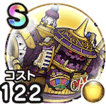

欲望の魔人
3周年記念イベントこころ最大コスト+4スキルの斬撃・体技ダメージ+7%斬撃・体技耐性+7% / 7.5点
くわしい特徴
【ランク特殊効果】 こころ最大コスト+4きあいためスキルの斬撃・体技ダメージ+10%斬撃・体技耐性+10%バリゲーンのこころS装備時バギ属性ダメージ+10%グリザードのこころS装備時ヒャド属性ダメージ+10%ブレアのこころS装備時メラ属性ダメージ+10%ミカヅチのこころS装備時デイン属性ダメージ+10%こころ最大コスト+4スキルの斬撃・体技ダメージ+7%斬撃・体技耐性+7%